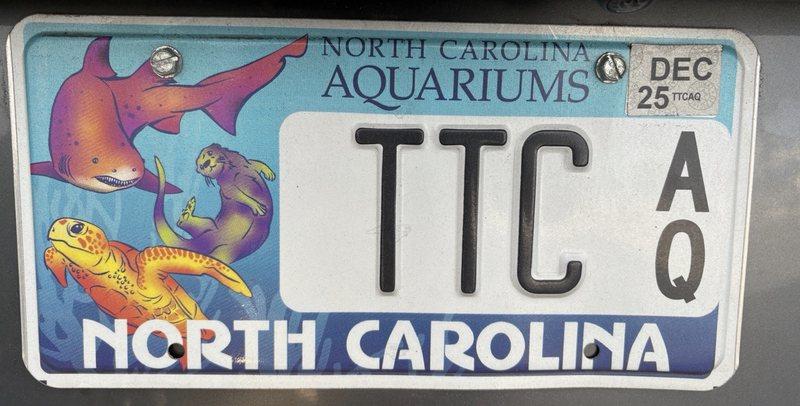

Published papers, in order of awesomeness
Most people list papers in chronological order. This is boring. Plus I like to rank things. I’m listing my papers in order of awesomeness.
-
The Roommates Problem Revisited
This paper got me my first job. It will always be #1. As a bonus, it’s a pretty good paper.
-
(Il)legal Assignments in School Choice
I agonized over whether to rank this first or second. On the one hand, this is obviously my best paper not just in terms of outcome but also in terms of quality. On the other hand, my JMP got me a job. At the end of the day, paying my rent won out. But I love this paper. I would call it my baby, but I think we spent four years trying to get it published, so let me call it my toddler. I love my toddler. Also, working with Lars was a treat. If you ever get the opportunity, I highly recommend it. This paper supersedes two early versions. Some of the early versions have been cited (thanks!) and there are different titles. So for completeness, here are two past versions if for some reason you’re interested. Excuse the typos! Which School Assignments are Legal? An early version of this paper was presented at EC’16 under the title Petty Envy When Assigning Objects.
-
Top Trading Cycles
When I was introduced to Al Roth’s early papers, I was hooked. Most people love his stuff in the 90s and early 2000s (to be clear, I also love these papers), but my favorites have always been the little papers he wrote in the late 70s and early 80s. Roth and Postlewaite (1977) is one of the papers that made me want to be a matching theorist. JME ran a 50th-anniversary issue honoring the best papers in the journal’s history, and, not surprisingly, Shapley-Scarf and Roth-Postlewaite are at the top of this list. Al asked me to write the introduction to R&P 77 with him, and I consider it the greatest honor of my career (life?!). I have been called the TTC guy before, and after this, I decided to just embrace it. I went and got what may be the nerdiest vanity plate in North Carolina.

-
Obvious Manipulations
I was fortunate these past two years to have two papers I loved and two coauthors who were amazing to work with. Pete, if you ever want to work on another paper, count me in. Anything I wrote would leave sounding awful and come back sounding great. Is there anything better than that?! The guy is pretty smart to boot. We randomized the names on this one, and I sold half of my probability share for a bottle of Scotch. I have no regrets. It was good Scotch.
-
Two Simple Variations of Top Trading Cycles
You shouldn’t run Top Trading Cycles. You should run Clinch and Trade!
-
Family Ties: School Assignment with Siblings
We had never considered siblings in school assignment until we actually tried to run the Wake County Magnet assignment. In our first attempt, we assigned 200+ siblings to different schools. Uh-oh! This paper is a good example of the symbiotic relationship between academic research and real-world problems. The application gave us a fun theory problem to work on.
-
Identifying the Harm of Manipulable School-Choice Mechanisms
I now have two publications that have data, regressions, and tables! I hope this doesn’t mean I have to self-identify as an empiricist. Bob deserves the bulk of the credit, but this was a fun paper to work on.
-
Efficient Procurement Auctions with Increasing Returns
Oleg deserves the bulk of the credit for this one. This paper was 1) fun to work on, 2) took less than 7 months from writing to acceptance, and 3) we got paid to design. What’s not to like?! Now that I think about it, maybe this paper should be ranked higher!
-
Interview Hoarding
This was my “pandemic” paper. I spent the pandemic in Santa Cruz, and honestly, it was one of the best years of my life. But working was a struggle. I found myself a bit rudderless. What got me through this was regular Zoom calls with Vikram. Some papers are a struggle, and some feel easy. This one was about as easy as it gets. Vikram, it was a pleasure working with you.
-
Sequential Kidney Exchange
I have a mental list of people I’d be willing to donate a kidney to. Larry is high on the list.
-
How to Assign Scarce Resources Without Money: Designing Information Systems that Are Efficient, Truthful, and (Pretty) Fair
This paper supersedes an earlier paper, Making Efficient School Assignment Fairer. My first rejection on that paper was in 2013, and it was finally published in 2020! Publishing takes persistence, but it is obvious to anyone who reads the two papers that Martin and Stefan made the paper immeasurably better. It was a pleasure working with them both. When I think of this paper, I will think of Stefan’s amazing quad-fold wallet.
-
Competitive Equilibria in School Assignment
Part of my long list of TTC characterizations. Really, this and the justness paper could be put in either order, but this one is newer and shinier, so I’m putting it first. It’s a nice, really simple paper that’s easy to interpret. I like papers like that.
-
Making Just School Assignments
A reasonable person might complain that I’ve written too many TTC characterization papers. This is the one you should read.
-
An Alternative Characterization of the Deferred Acceptance Algorithm
I really like this paper. The referees were less enthusiastic!
-
The Attraction of Magnet Schools: Evidence from Embedded Lotteries in School Assignment
It was a really great experience designing and running the Wake County magnet assignment. They gave us amazing data, and we all thought we could run off a series of top publications. Well, it didn’t work out that way. I’m pretty sure this paper set my record for the most number of rejections. So many that I lost count. I also lost count of how many years it took to get it published, but I am guessing close to a decade. The reason why is because we all still believed in this paper, and we kept submitting it to good journals. Same for me: I like this paper.
-
What You Don’t Know Can Help You in School Assignment
Some papers are easy, some papers are hard. Umut and I worked really hard on this paper. The proofs took us months to get right. But I think I learned more from this paper than any other paper I’ve written. I never understood EADA until writing this… now I understand it about 50%! All of the ideas for legal assignments came from working on this.
-
An Alternative Characterization of Top Trading Cycles
My first TTC characterization. Not much else to say.
-
The Secure Boston Mechanism: Theory and Experiments
This paper might have finally broken me when it comes to running experiments. I thought we had a cool new algorithm and interesting experimental results. Seems like a good paper to me! But publishing this was a bear. We have one really great referee to thank for this publication.
-
Partitionable Choice Functions and Stability
I like all of my papers, but they can’t all be awesome. We rewrote this paper so many different times that I honestly can’t remember what the final version looks like or even where it was published. I recommend addressing any questions to my very capable co-authors!
-
Strategic Exclusion of the Highest-Valued Bidders in Wholesale Automobile Auctions
I’ve been telling “should we call them automobiles or vehicles?” stories about working with Bob for years. That alone makes me happy whenever I think about this paper.
-
Network Formation Under Negative Degree-Based Externalities
Sometimes the review process is good. Sometimes it’s awful. This one was the worst. Buy me a beer sometime, and I’ll tell you about it. Still, it was the first paper I ever wrote, so I have a soft spot for it.
-
Intergenerational Links in Female Labor Force Participation
What I love: citations that say Morrill and Morrill. What I hate: I didn’t do all that much on this paper, but for years it was my most cited article. I guess my wife is a better economist than I am!
-
Personality Traits and Bidding Behavior in Competing Auctions
This journal made us do four revisions (including two conditional acceptances!). Much of this had to do with the now infamous “Footnote 9”. But most importantly, when running this experiment a student stood up and then threw up on the floor. That actually happened. As I was on my knees cleaning the floor, I decided that I should stick to theory.